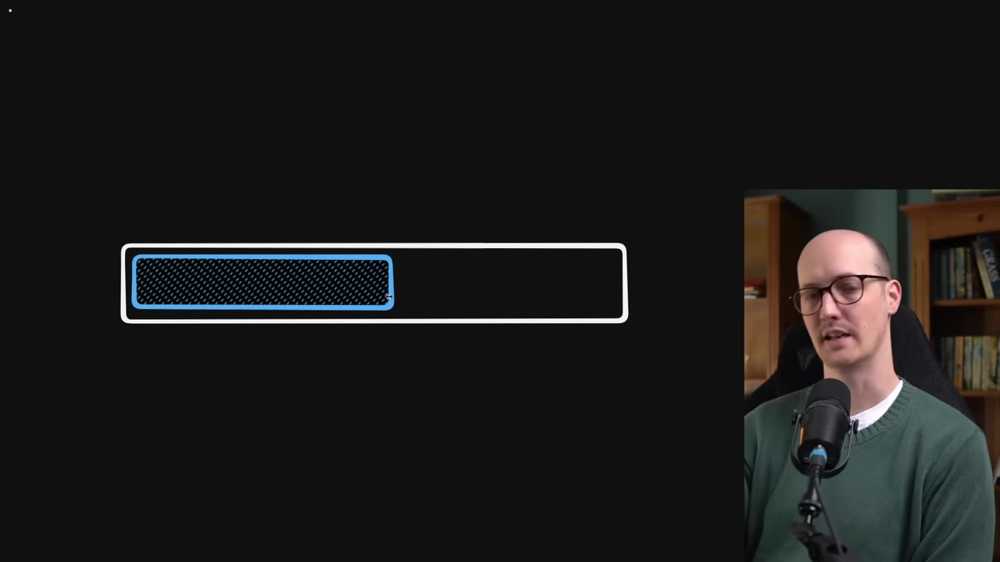
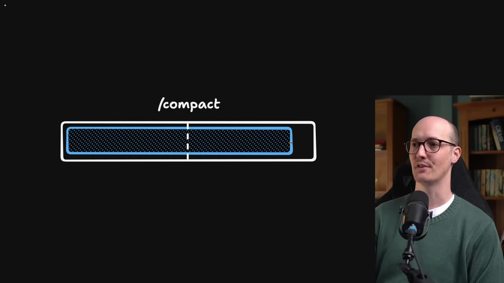
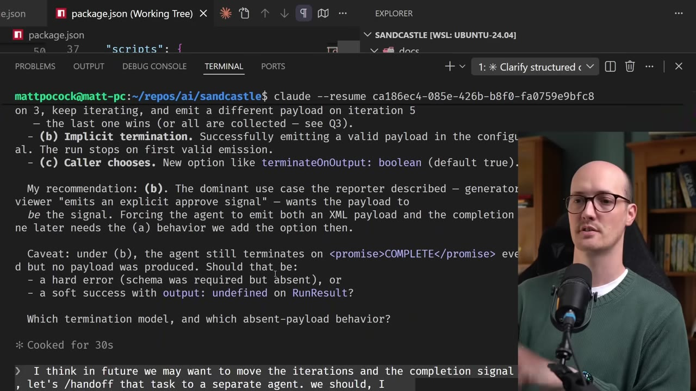
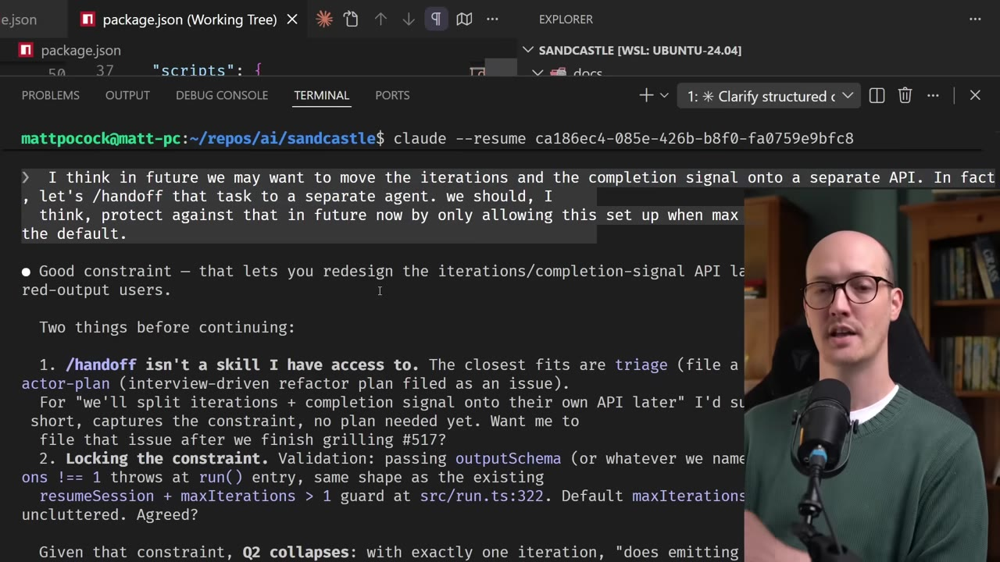
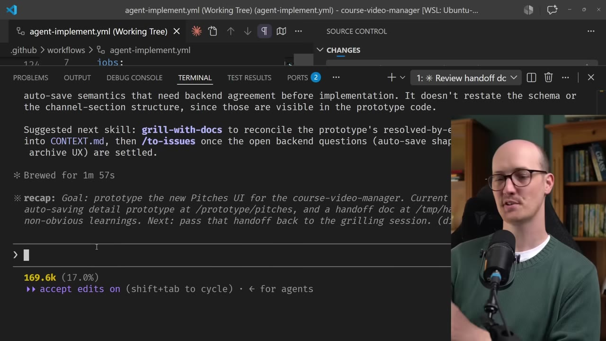
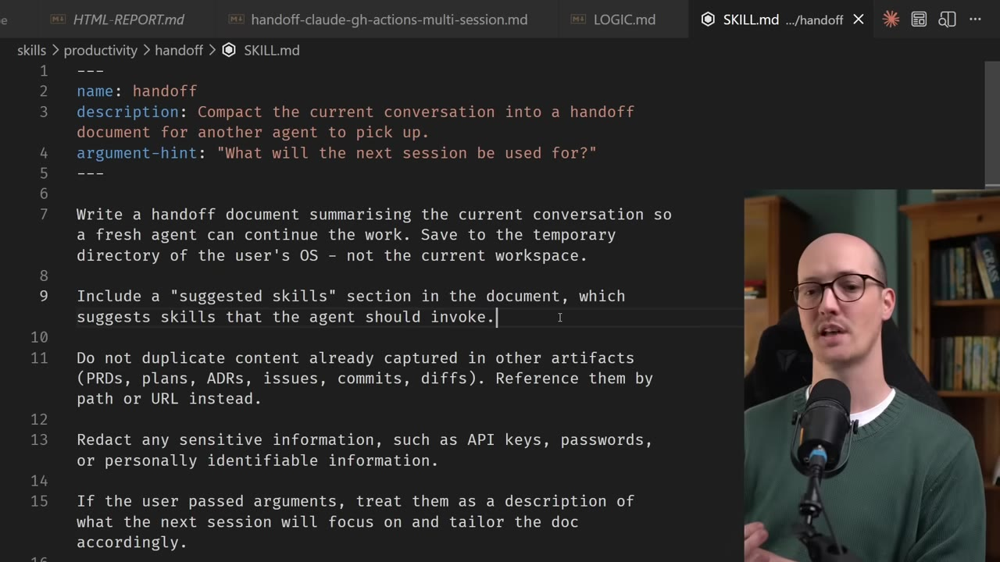

A skill that compresses a Claude Code session into a markdown handoff document — so you can slice off work to a fresh agent without clobbering your current context window.
Watch on YouTubeEven with a 1-million-token context window in Claude Code, only the early portion is truly sharp. As tokens accumulate, attention relationships strain and responses degrade — the speaker calls the first ~120k tokens the "smart zone" and everything beyond it the "dumb zone."

The smart zone has strong attention relationships because there are fewer tokens to compute. Once you're deep in the dumb zone, the agent's ability to focus diffuses. This means for proper smart tasks, you only have about 120k tokens to work with.
When you're approaching the dumb zone, /compact takes your large conversation and summarizes it — dropping you back into the smart zone. Some harnesses even have an auto-compaction buffer that kicks in automatically near the context window's end.

The summary typically includes referenced files, what was said, and the conversation's tone — injected as a nugget at the start of the new session. But compaction creates "sediment" from previous conversations and is really only useful for one long session, not parallel workstreams.
The handoff skill does something different: it writes a focused markdown document in the user's temp directory that captures exactly what the next session needs to do. This lets you run two workstreams in parallel — your current session stays pure, and the new session gets a clean context window.

A common pattern: you're deep in a grilling session, spot a refactoring opportunity that's out of scope, and say "hand off that task to a separate agent." The skill sharpens your current session (the out-of-scope item collapses) and creates a focused handoff document.
A good handoff document isn't a dump — it's a focused brief for the receiving agent.

The document captures: - Reason — why you're handing off (what triggered the handoff) - Focus — what the next session should accomplish - Constraints — what's in scope, what's out of scope - Suggested skills — skills the receiving agent should invoke - Pointers — links to existing artifacts instead of duplicating content
The most powerful pattern the speaker demonstrates: a grilling session identifies questions that need prototyping, hands off to a prototype session, then hands back the learnings.

In one example, a grilling session at question 13 identified window communication and TLDR SDK integration as things that needed to be prototyped. The prototype session ran to 169k tokens — far beyond what would fit in the grilling session. Learnings were then handoff back to the original planner.
This is essentially a DIY sub-agent pattern: use a context window for one specific task, compress learnings from that task, and pass them back to the parent.
The handoff skill encodes several design principles that make it practical:

Because handoff uses a plain markdown document, it's cross-agent universal: pass a Claude Code handoff to Codex, Copilot CLI, or any other agent for adversarial review or implementation.